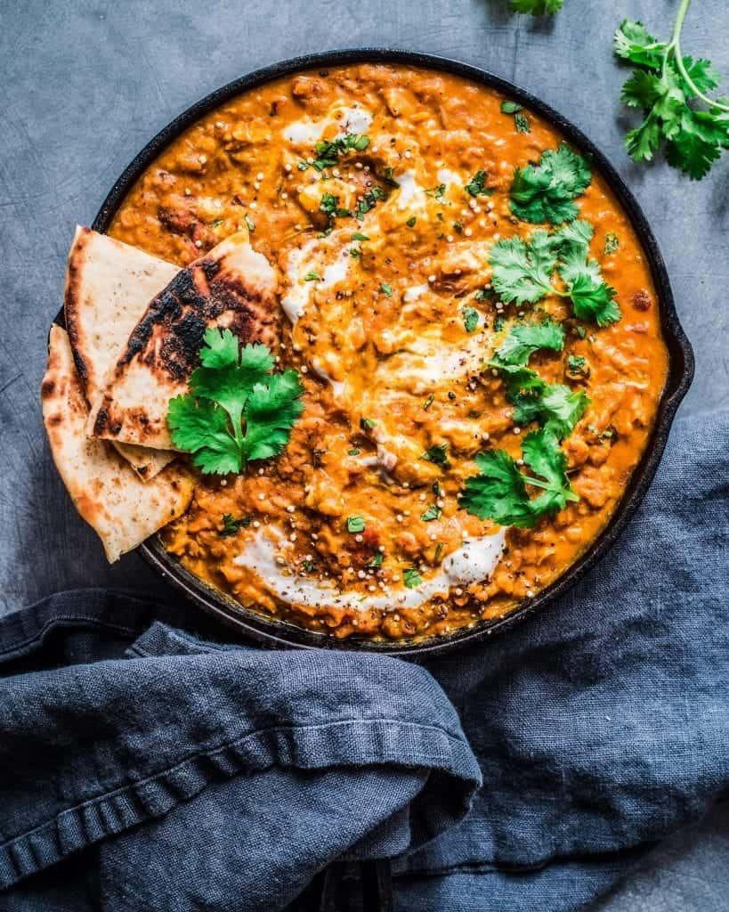

Home
Main Dish: Chicken Biryani
Side Dishes: Chapati,
Cucumber Raita
Dal (Lentil Curry)

Dal (Lentil Curry) Recipe
Ingredients:
- 1 cup split red lentils (masoor dal)
- 3 cups water
- 1 medium-sized onion, finely chopped
- 2 tomatoes, chopped
- 1 green chili, finely chopped (adjust to taste)
- 1 teaspoon ginger-garlic paste
- 1/2 teaspoon turmeric powder
- 1 teaspoon cumin seeds
- 1 teaspoon mustard seeds
- 1/2 teaspoon red chili powder (adjust to taste)
- 1 teaspoon coriander powder
- Salt, to taste
- Fresh coriander leaves for garnish
- 2 tablespoons oil or ghee for tempering
- 1/2 teaspoon garam masala (optional, for added flavor)
Instructions:
- Rinse the Lentils:
- Rinse the split red lentils under cold water until the water runs clear.
- Cook the Lentils:
- In a medium-sized saucepan, combine the rinsed lentils with 3 cups of water. Bring to a boil and then simmer on low heat until the lentils are soft and fully cooked. This usually takes about 20-25 minutes. Stir occasionally.
- Prepare the Tempering (Tadka):
- In a separate small pan, heat oil or ghee over medium heat.
- Add cumin seeds and mustard seeds. Allow them to splutter.
- Sauté Aromatics:
- Add finely chopped onions to the tempering and sauté until they become translucent.
- Add Spices:
- Add ginger-garlic paste and chopped green chili. Sauté for a minute until the raw aroma disappears.
- Add turmeric powder, red chili powder, coriander powder, and salt. Stir well.
- Add Tomatoes and Spices:
- Add chopped tomatoes to the mixture and cook until they become soft and the oil starts to separate.
- Combine with Lentils:
- Once the lentils are cooked, add the tempered mixture to the lentils and stir to combine. Adjust the consistency with water if needed.
- Simmer and Garnish:
- Let the dal simmer for a few more minutes to allow the flavors to meld.
- If desired, add garam masala for an extra layer of flavor.
- Garnish with fresh coriander leaves.
- Serve:
- Serve the dal hot with steamed rice, Chicken Biryani, or chapati.
Return to Top of Page